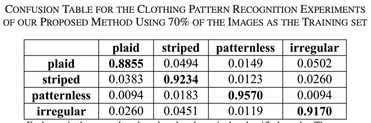

Pattern Recognition
Model 1:
A first approach works by extracting both global (RadonSig) and local features (SIFT) of clothing images, as well as “statistics of wavelet sub-bands (STA)” in order to evaluate the complementary relationships between the different feature channels [1]. These extracted features are combined to recognize clothing patterns through a method of supervised learning known as support vector machines (SVM) classifier. This system is then evaluated on a dataset of image patterns, categorized as either plaid, striped, patternless, horizontal/vertical, and irregular [2]. From the database, a training set is selected as a fixed-size random subset of each category, while the remaining images are used as the testing set. With this combination, a 92.55% recognition accuracy was achieved.
Additionally, clothing color recognition is implemented by quantizing the normalized color histogram of each clothing image in the HSI (hue, saturation, and intensity) color space. More specifically, “for each clothing image, [this] color identification method quantizes the pixels in the image to the following 11 colors: red, orange, yellow, green, cyan, blue, purple, pink, black, grey, and white” [1]. In cases where multiple colors are present, it will output only the dominant colors, which are described as filling more than 5% of the entire image. Both “the clothing patterns and colors mutually provide complementary information, the recognized patterns provide additional information about how different colors are arranged” [1].


Source: https://ieeexplore-ieee-org.proxylib.csueastbay.edu/document/6739993
Model 2:
A second approach classifies clothing items and can identify a variety of attributes, such as type, pattern, and texture. This system enhances FashionNet, “a deep model that learns clothing characteristics by predicting garment qualities and categories together” [3]. FashionNet uses a convolutional deep net, capable of performing multi-class, multi-label classification, in which each clothing article can have one or more clothing attributes attached to it [4]. In order to improve accuracy, the VGG16 design (a convolutional neural network that is sixteen layers deep) which was originally used in FashionNet was replaced by ResNet34 architecture (a thirty-four layer convolutional neural network for image classification). In training, the Deep Fashion dataset was used due to its diversity in clothing categories and descriptive attributes [3]. During evaluation, it was shown that the performance of this model outperformed the rest in terms of accuracy, with Top-3 and Top-5 referring to whether the top three or five highest probability answers match the expected answer.


Source: https://ieeexplore-ieee-org.proxylib.csueastbay.edu/document/9820475
Model 3:
Another model also uses pre-trained convolutional neural networks to classify apparel. This method of “using a pre-trained CNN model for either fine-tuning a CNN model with a new task or using the layers activations of pre-trained CNN model for potential feature extraction” is known as transfer learning [5]. The CNNs used include AlexNet, VGGNet, and ResNet, which were trained on the ACS fashion dataset. This dataset was constructed from the ImageNet dataset, contains nearly 90,000 images, and covers fifteen different clothing types including dresses, sweaters, undergarments, and uniforms. About 80% of these images were assigned to the training set while the other 20% were assigned to the test set. Deep features were extracted, “fc6 and fc7 activations were used for AlexNet and VGGNet models and fc1000 activation layer was used for ResNet model” [5]. Each deep feature vector was evaluated and the proposed model achieved the highest accuracy percentage, as shown below.

Source: https://ieeexplore-ieee-org.proxylib.csueastbay.edu/document/8875916
The most accurate model for style and pattern recognition was the second, which uses a pre-trained ResNet34 CNN architecture and enhances FashionNet. This method would likely outperform the third model’s proposed method in terms of accuracy when evaluated under the same circumstances. It also contains more descriptive attributes than both of the other methods.